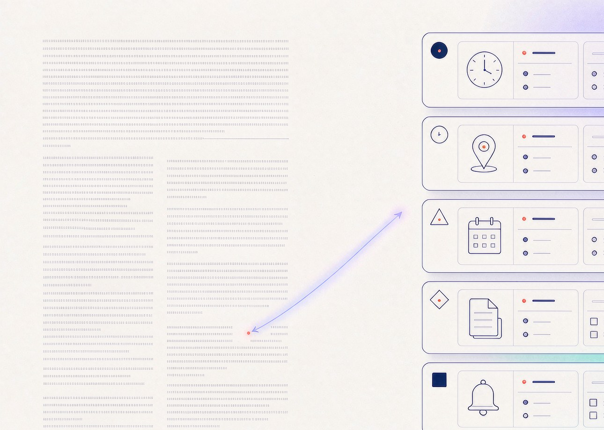
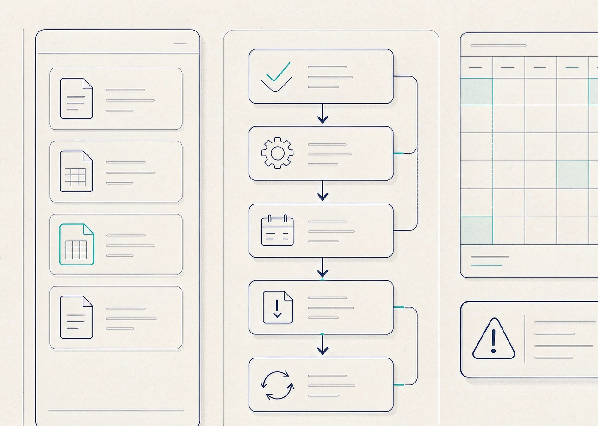
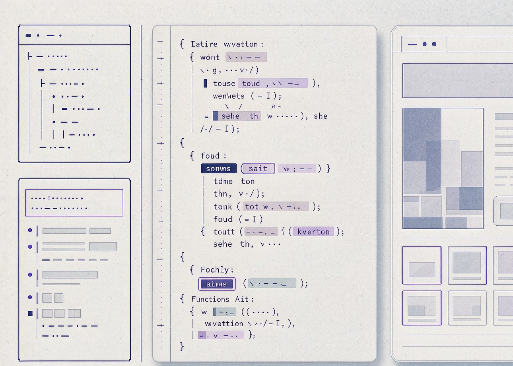
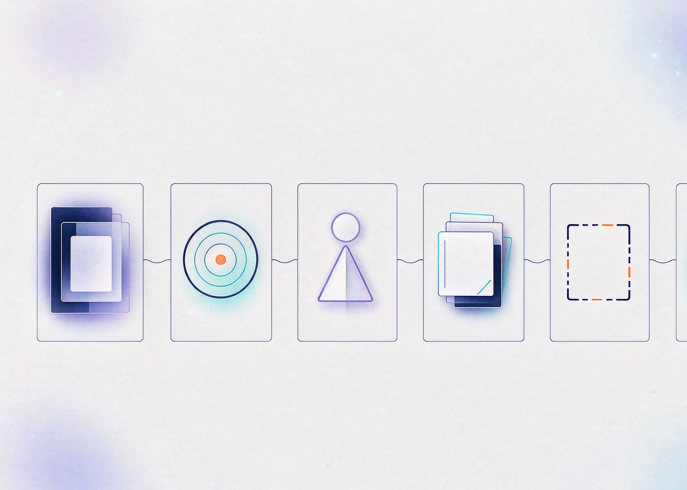
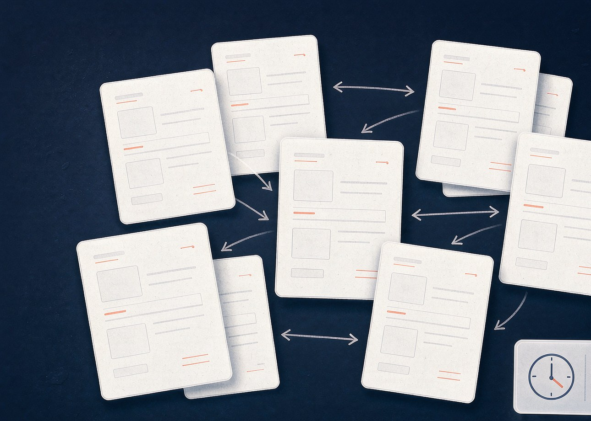
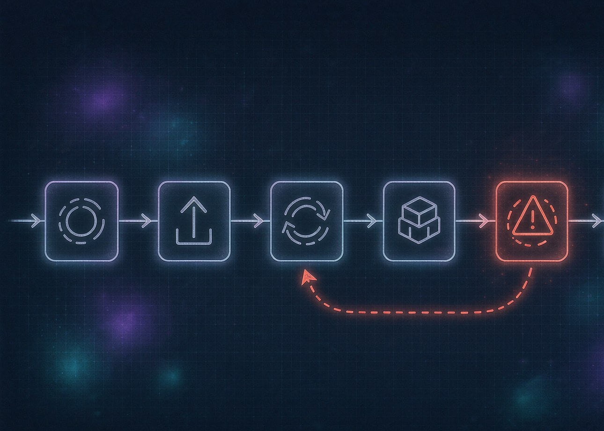
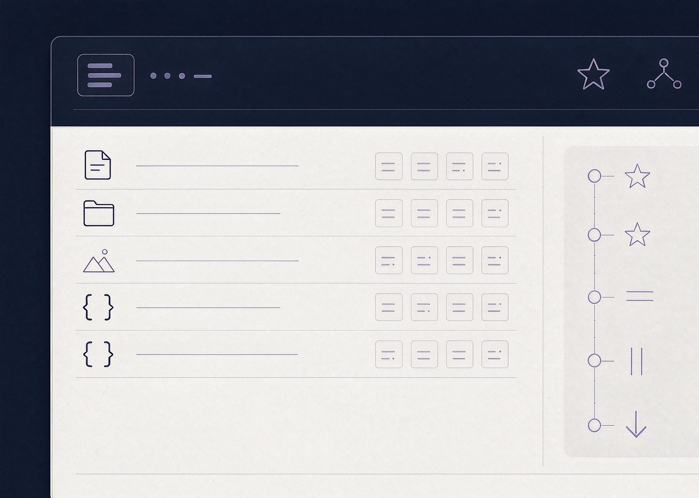
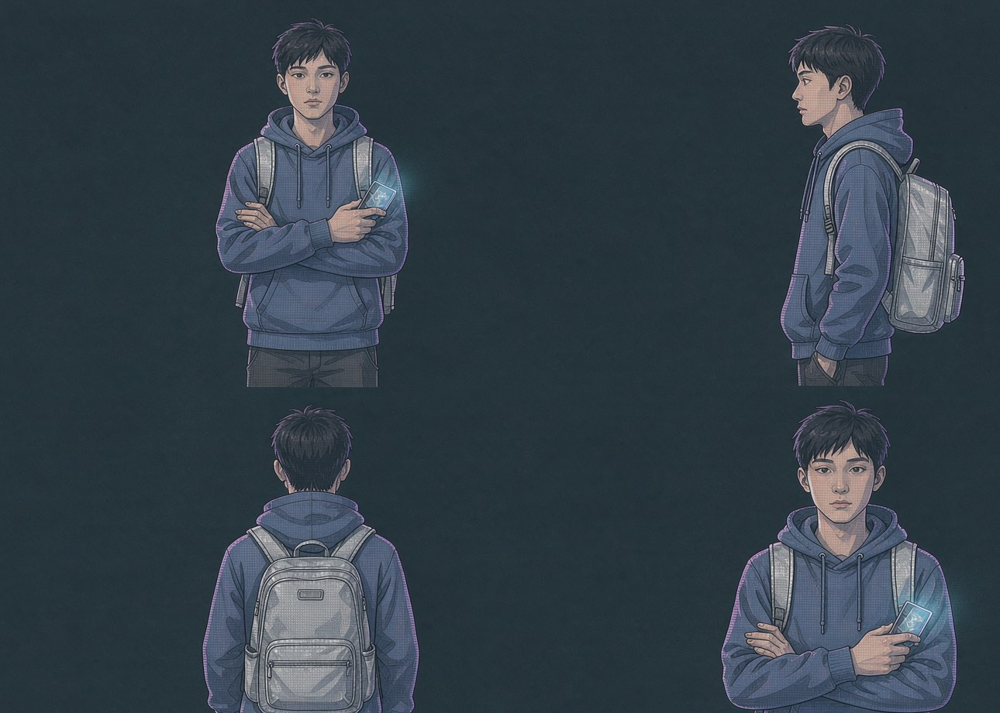
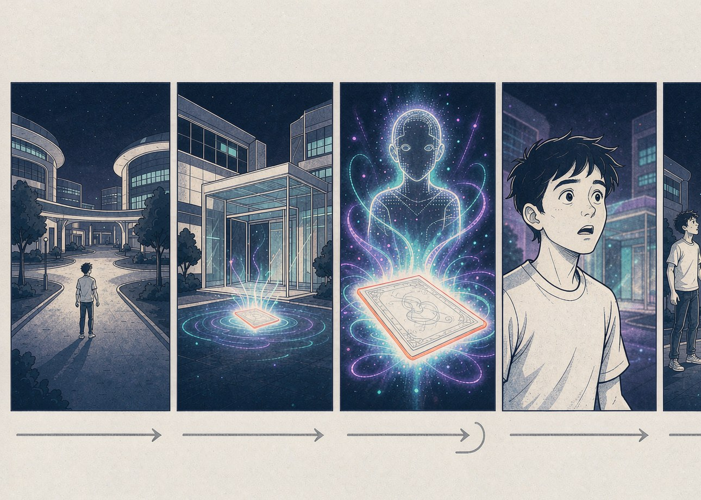

今天不背概念。我们现场看看，AI 究竟能不能干活——用 150 分钟，把你和一组 AI 队友一起，做出一个真正属于你的作品。
现场举手或扫码投票。投完追一句：你当时遇到了什么问题？
生成图片、编写代码、陪聊或提供建议……用过很多次 AI，
你留下过一个完整作品吗？
请选择你认为 AI 目前能稳定达到的最高等级。投完先不公布答案，等下课前回到第 69 页再讨论。
每一项猜一个 AI 参与比例：10% / 50% / 90%。
提示：参与比例不是评价作品质量的唯一标准。
AI 降低了制作门槛，但没有取消人的判断。下面这五件事，少一件，结果都可能是垃圾。
学校要求每个 3 人小组交出一件完整作品。
3 人小组 · 非设计专业 · 7 天 · 预算有限
不是把同一件事做六遍，而是六种能力互补。
下面这张表，就是接下来 70 页会用到的全部工具人。
你不必全部解决，但请选出当前最让你头疼的一项。这一项就是接下来我们要用 AI 帮你缓解的起点。
AI 把复杂信息转化为下一步行动，而不是给你一份摘要。

以下几种情况，全是过去一年里真实发生过的。
以下是 AI 可以在 10 分钟内完成的事。每一项都建议你自己再过一遍。
让 AI 用三种方式解释同一段论文，比读十遍更有效。
请让 AI 把以下 5 个问题答完，再翻到下一页对照结果。
在 prompt 末尾加这三句，等于让 AI 自己先做一轮自检。
普通 AI 的回答：
确定主题 → 制定计划 → 选择工具 → 开始创作 → 检查作品
道理都懂了，活到底谁来干？
这 7 步不是列表，是一条连续的工作流——任何一步掉链子，后面都会出问题。
「有目标 · 会规划 · 能用工具 · 会检查结果。」
能够围绕目标，
使用工具并连续完成任务的 AI 系统，
我们叫它 AI 智能体（Agent）。
左边是「告诉你怎么做」，右边是「直接做完」。两种都是 AI，差异在能不能用工具。
把 AI 智能体拆成五个器官，更容易理解它和你的协作方式。

现场把 4 份资料丢给它：3 份活动通知、1 份课程表、1 份比赛报名要求、1 份个人目标。
它需要输出一周安排、冲突提醒、截止排序、准备清单和推荐。
演示过程里，重点看这 5 件事——任何一件出问题，结果就可能不可信。
不是看它「完成没」，而是看 5 个具体问题。任何一个过不去，都不要发布。
3 人小组、非设计专业、7 天完成。
8 个内容模块是必填，下面是清单——不会写代码，应该从哪里开始？
Codex 是面向代码和项目的 AI 智能体。现场演示从一段需求开始，到一个能点开的网页。

不是谁更强，是谁干哪类活。互相配合是常态。
AI 不知道：主题、观众、时长、风格、平台、已有素材，以及「很酷」的标准。
模糊输入，通常只能得到碰运气的结果。
把每句话读一遍，再想想你自己接到会怎么办。
把这 6 个问题写进 prompt 第一段，能省掉后面 80% 的修改。
典型平庸结果：
主角努力学习 → 遇到困难 → 朋友鼓励 → 最终成功 → 明白坚持的重要性。
请回答 4 个问题：
"主角是一名不敢主动社交的大一新生。 为了完成小组作业，他训练了一个 AI 替自己说话。但在最终汇报前， AI 突然拒绝继续帮助他。"
主角 / 目标 / 冲突 / 场景 / 风格 / 时长——
这 6 项都说清楚了，结果就从「鸡汤」变成了「故事」。
把 prompt 当成你给新同事的一封邮件。
写得越清楚，返工越少。

"在开始之前， 请先向我提出 5 个最关键的问题。 得到回答后，再制定方案。"
复杂任务，把定义权先还给你。
AI 可能会问：观众、平台、团队、素材、截止时间。
「我要完成【 】
给【 】使用
使用场景是【 】
已经有【 】
必须满足【 】
最终交付【 】
请按【 】自检」
一张可带走的卡。
下次接到任何任务，先把这张卡填完，再开 prompt。
它知道很多公开知识，但通常不知道你的最新资料和内部信息。具体可能发生 5 种情况：
新生手册、课程安排、社团介绍、校园地图、学校制度、比赛材料、个人笔记、老师课件——都能喂给它。
现场准备一份新生手册 PDF。问 AI 这 5 个问题，看它能否引用原文 / 答不上的题会不会承认。
用户提问 → 查找相关资料 → 把内容交给 AI → 组织答案 → 返回出处。
每一类都对应一个真实场景。挑你最先需要的那个开始。
以下 7 种情况，每一种都会让知识库变笨，而不是变强。
这一步是知识库质量的天花板。宁愿慢一周，也要先做这一步。
判断问题：
这份资料如果被陌生人看到，会不会产生风险？
会 → 不上传。
你可能遇过这 5 件事中的至少 3 件——
AI 一次改多文件 / 突然不能跑 / 不知道改了哪 / 没有备份 / 同事同时改
同一份 PPT 的 6 个「最终版」，是版本管理缺失的症状。这 6 个文件名，你手机里也能找到。

自动存档记录以下 6 项中的每一条——版本管理是数字作品的基本保险。
先理解「记录 / 比较 / 恢复」三个动词。
命令行以后再说，今天先让你相信这件事。


Git 记录版本；GitHub 托管、协作、展示项目。
这两件事不一样。
一份合格的 README 回答 8 个问题。下面这 8 问任何一项缺失，协作者都会卡住。
不只背名词——每个动作背后是一次不同的协作意图。
Codex 不只是写代码，它还能帮你读仓库、改 README、提 PR。
6 位候选主角。选一个获胜者，后面的故事和分镜围绕他/她展开。
"一个【怎样的人】 为了【什么目标】 遇到【什么阻碍】 最后必须【做出怎样的选择】"
把四个槽位填完，
你就有了第一稿故事大纲——
剩下的只是把它写长。
三条不同的故事方向，
选一个最适合 30 秒短片的。
年龄身份、发型脸部、衣服颜色、性格、标志物品、常用动作、画面风格——
这 7 项一旦定了，每次都把它写进 prompt。

"蓝色连帽衫的大一新生站在未来图书馆前，校园卡发出蓝紫色光芒。"
三种画风，三种情绪。
这 8 项不一定要全部出现，但缺得越多，AI 越要自己猜。
7 种典型翻车 + 5 个通用解法。
生图描述的是「这一刻」。
生视频描述的是「从 A 到 B」。
5 个镜头 × 平均 3 秒 = 15 秒的成片。
把每个镜头的「画面 / 景别 / 时长」写清楚再让 AI 生成。

AI 是创作团队，人承担导演和总编辑。任何一个环节卡住，都要把前一步拿出来重做。
以下 8 项中任何一项不过，都不要发布。
发布可以：
获得反馈 / 找到同好 / 建立作品集 / 记录成长 / 证明能力 / 获得机会
别把视频丢进知乎，把文章丢进 B 站。
不要只写「本作品由 AI 一键生成」——那等于没写。
真正稀缺的是专业能力 × AI 能力 × 解决问题能力。
挑一个最像自己的方向，未来 4 年慢慢长成它。
AI 可以是助手、 智能体、知识库、 编程队友和创作团队。
但仍需要人来：
提出目标 · 提供背景 · 选择工具 · 检查事实 · 判断质量 · 承担责任。
从下面 6 个挑战里挑 1 个，
或自己定义一个。
"别把 AI 只留在聊天框里。
用它完成一件真正属于你的作品。"